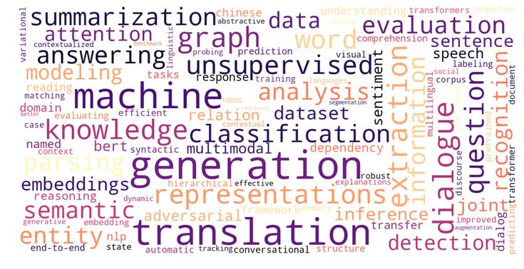

|

This page is an attempt to organize papers into distinct research areas, and to provide an overview of my works.
Naturally, the page is selective both in terms of research areas and the papers listed. For a more complete picture, please see the publications page.
Representation Learning on Words, Sentences and Knowledge GraphsDialogue-based Information Extraction |